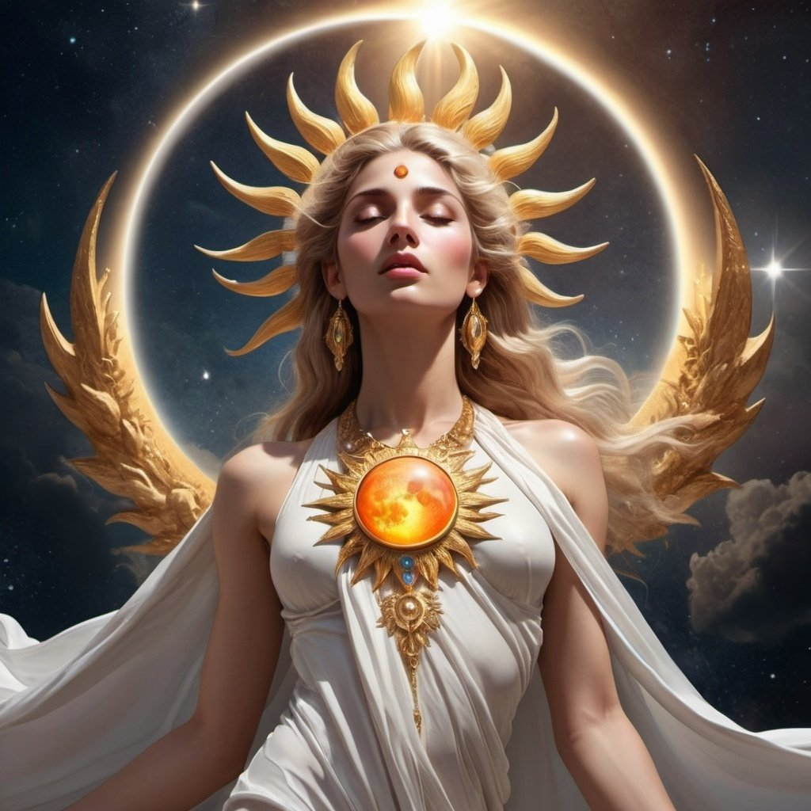
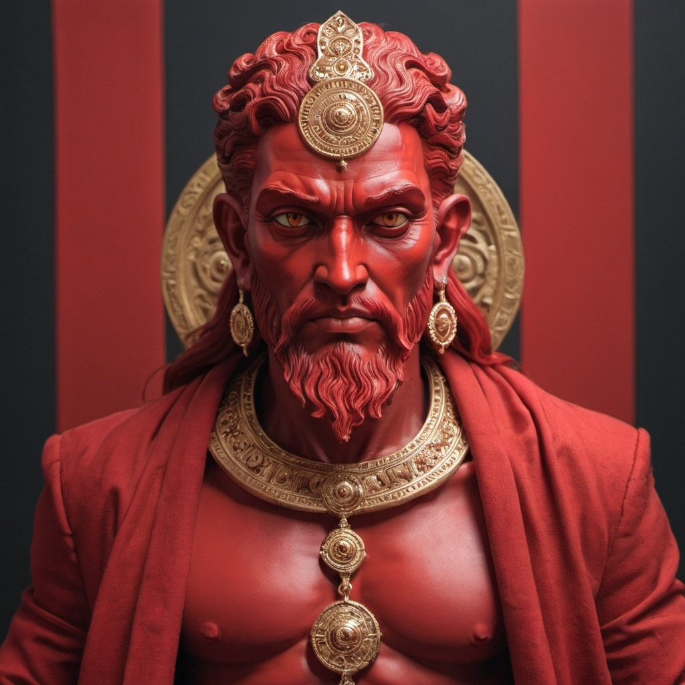
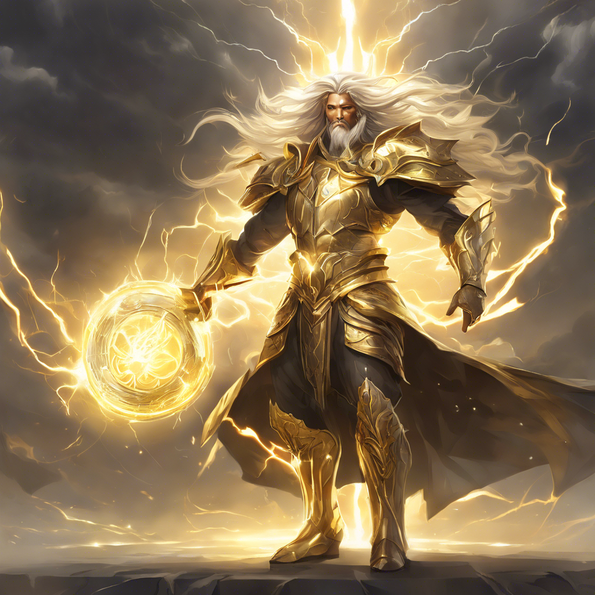
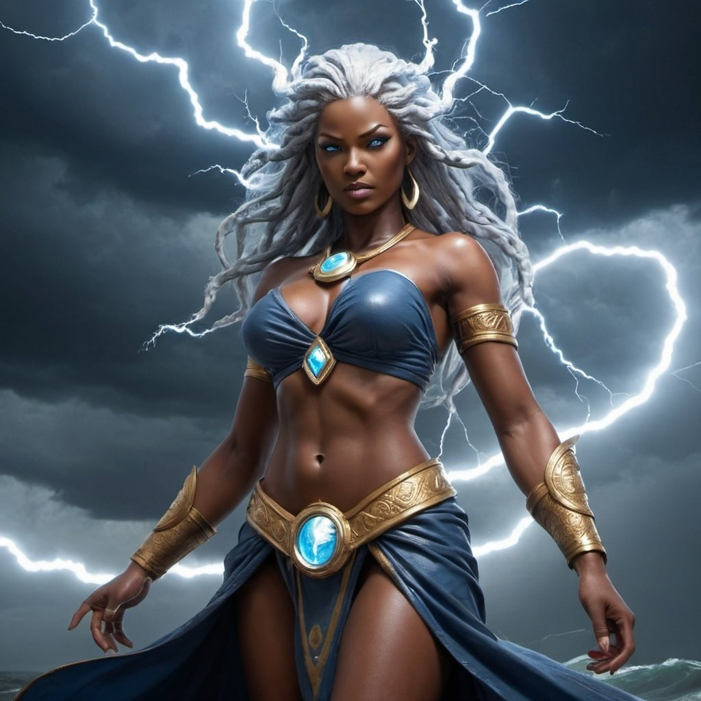
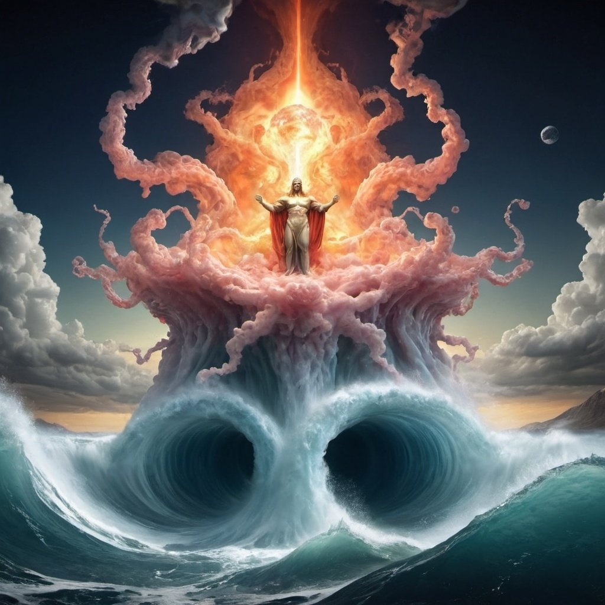
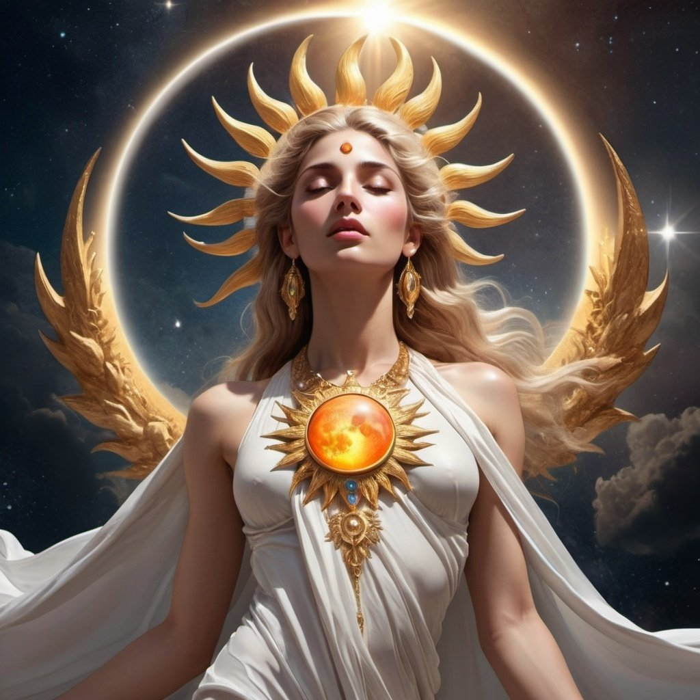
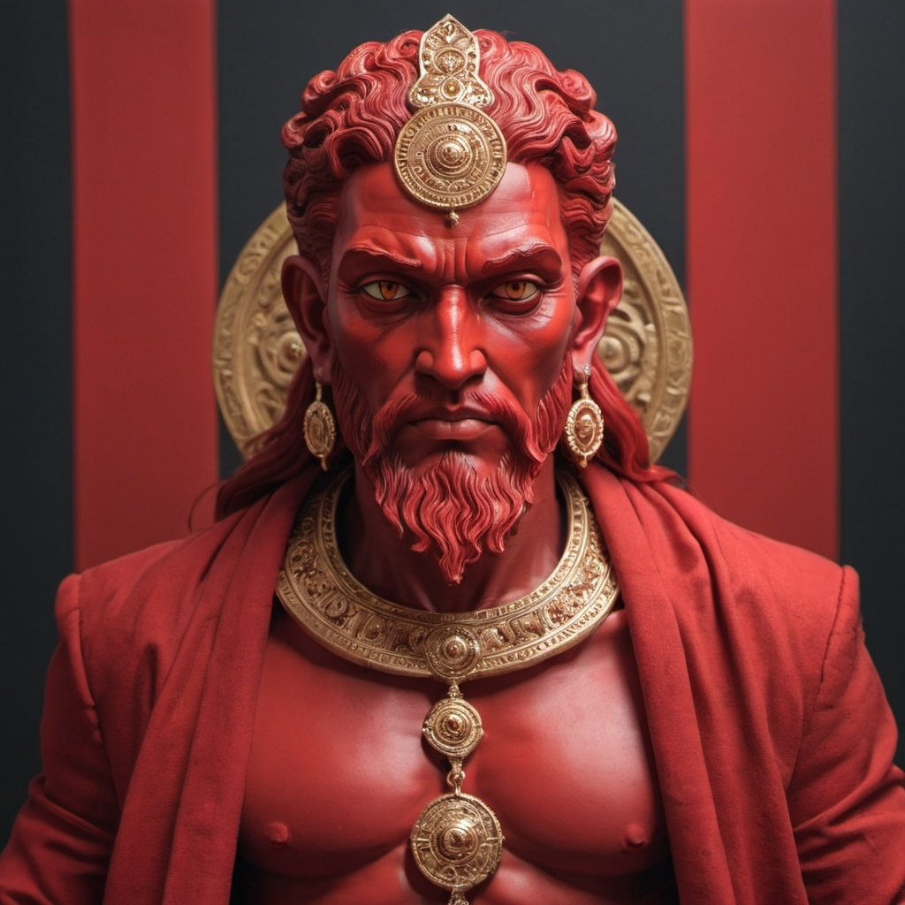
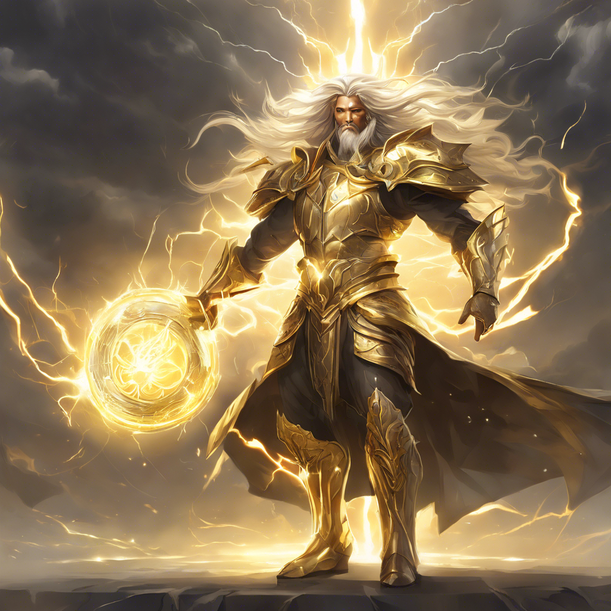
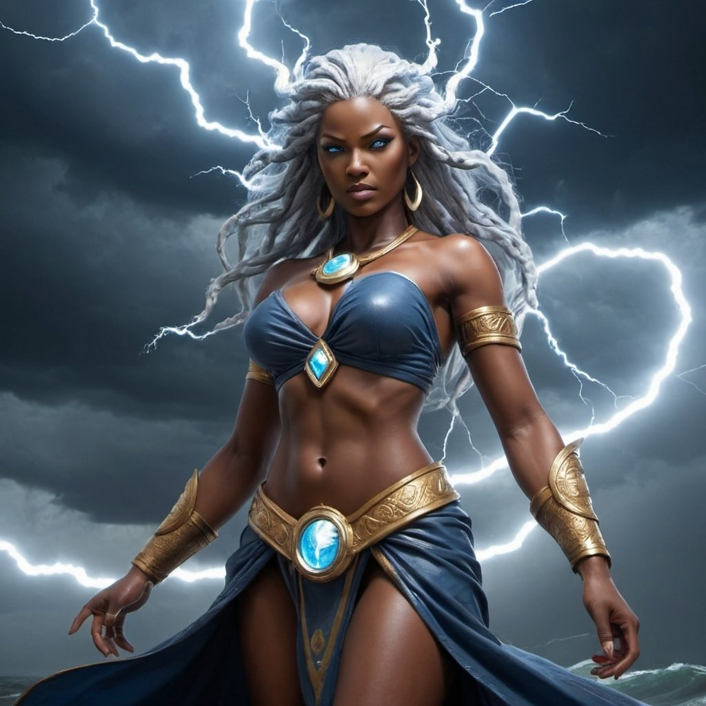
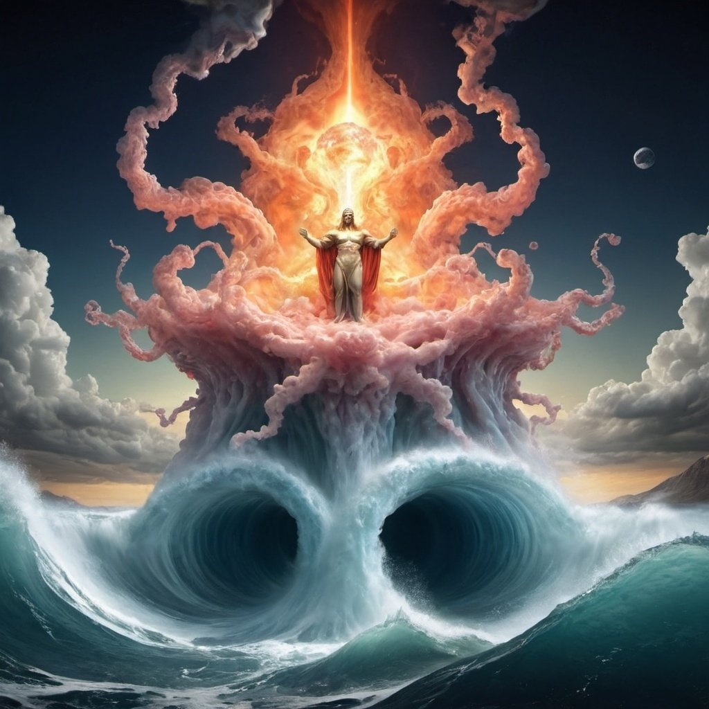

Ananké/Chaos
Na aurora dos tempos, antes que o mundo existisse em sua forma conhecida, reinava o Chaos, uma entidade primordial de poder absoluto. O Chaos não tinha forma definida, sendo um amálgama de energia pura e essência indomável que permeava todos os cantos do universo em expansão. Era a personificação do vazio primordial, onde todas as possibilidades e potenciais estavam contidos. Do próprio seio do Chaos, nasceu de forma espontânea e sem explicação uma entidade singular e radiante, cuja presença irradiava uma aura de criação e destruição simultâneas. Este ser, ao emergir do tumulto eterno, foi nomeado Ananké pelos antigos, simbolizando a inevitabilidade e a necessidade inescapável que ele representava. Ananké, a personificação do destino e da ordem cósmica, possuía um poder igual ao de seu progenitor, Chaos. Ele era a força que impulsionava o universo em direção à ordem e à estrutura, moldando os cosmos e definindo os limites que o Chaos não podia ou não desejava estabelecer. Enquanto Chaos representava o potencial infinito e a liberdade absoluta, Ananké trazia consigo a inevitabilidade do tempo e a inexorabilidade do destino. Juntos, essas duas entidades ancestrais formavam o equilíbrio dinâmico que permitia a existência de tudo o que é, desde os planetas e estrelas até os seres vivos que habitam os mundos criados por sua interação. Assim, a história de origem de Chaos e Ananké transcende o conceito de mito e se torna a própria essência da existência: a interação eterna entre o potencial infinito e a ordem necessária que molda o universo como o conhecemos hoje.
Eclipse
Na era primordial, quando o universo era um turbilhão de caos infinito e potencial ilimitado, surgiu uma divindade singular que personificava a dualidade cósmica de uma maneira nunca antes vista. Esta deusa nasceu diretamente das entranhas do Chaos, uma manifestação de sua capacidade de gerar ordem e significado mesmo dentro do vórtice insondável. Chamada de Eclipse pelos mortais que a veneravam, ela era a filha do Chaos e a guardiã dos ciclos celestes. Durante o dia, Eclipse se manifestava com uma forma masculina imponente, cuja presença irradiava calor e vigor como o próprio Sol. Seus olhos brilhavam com a intensidade do meio-dia, inspirando coragem e determinação nos corações dos que a observavam. À noite, Eclipse se transformava em uma deusa de beleza etérea, com cabelos prateados que brilhavam como a luz da Lua e olhos que capturavam a tranquilidade da noite estrelada. Sua presença era um bálsamo para os espíritos cansados, oferecendo conforto e proteção àqueles que buscavam abrigo sob seu manto de estrelas. No entanto, o verdadeiro poder de Eclipse era revelado somente durante os eclipses, quando ela mostrava sua forma verdadeira e andrógena. Nestes raros momentos cósmicos, ela aparecia como a personificação viva da harmonia entre o Sol e a Lua, combinando a força do dia com a suavidade da noite em uma síntese perfeita de dualidade divina. Eclipse não apenas governava sobre os ciclos celestes, mas também assumia a responsabilidade sagrada de guiar as almas dos mortos através dos reinos do submundo, onde seu julgamento era justo e imparcial. Ela representava a justiça equilibrada pelo amor e pela compaixão, mostrando às almas o caminho para a paz eterna ou a redenção, dependendo de suas vidas passadas. Assim, Eclipse, a deusa andrógena do Sol e da Lua, filha direta do Chaos, permaneceu como um farol de equilíbrio e harmonia no universo. Sua história não era apenas uma lenda, mas um testemunho vivo da interconexão entre todas as coisas e a beleza que reside na complementaridade de opostos.
Aetherion
No epicentro do cosmos, onde o poder do Chaos permeava tudo, surgiu um filho cuja aura ardente rivalizava com a própria estrela que deu origem à vida. Este ser imponente foi nomeado Aetherion, o Deus Rubro, filho direto do tumulto primordial que deu forma aos mundos. Desde o nascimento, Aetherion era envolto por chamas que não consumiam, mas sim iluminavam e purificavam. Seu olhar era penetrante como o fogo de uma forja divina, capaz de discernir a verdade mais profunda nos corações dos seres vivos e dos mortos. Ele personificava não apenas a justiça implacável, mas também a compaixão que equilibrava a equação da vida e da morte. À medida que os cosmos se expandiam e os mundos se formavam, Aetherion assumiu o papel de governante do submundo, onde as almas dos mortos encontravam seu caminho após a vida terrena. Lá, ele presidia os julgamentos das almas, pesando os feitos e os corações dos falecidos com imparcialidade e sabedoria ímpares. Os justos eram recompensados com a paz eterna em campos verdejantes e céus luminosos, enquanto os ímpios enfrentavam a retribuição proporcional aos seus atos, mas sempre com a oportunidade de redenção. Aetherion não apenas punia, mas também guiava e protegia. Ele era um mentor para aqueles que buscavam encontrar a verdade e a virtude, uma luz nos confins sombrios do submundo. Sua presença inspirava reverência entre os deuses e mortais, que viam nele não apenas um juiz implacável, mas um guia benevolente que oferecia esperança mesmo na passagem para o além. Assim, Aetherion, o Deus Rubro, filho de Chaos, personificava a dualidade do fogo: tanto como uma força destrutiva capaz de purificar e renovar quanto como uma luz que ilumina o caminho da justiça e da verdade. Sua história transcende os tempos, lembrando a todos que a justiça é tanto um dever divino quanto um direito inalienável de todos os seres, mesmo além da vida mortal.
Fulgor
Na interseção entre a tempestade implacável de Tormenta e o ardor divino de Aetherion, nasceu um filho que personificava a fusão incomum entre o poder das tempestades e a luz celestial. Este jovem deus foi chamado de Fulgor, uma entidade de beleza e força incomparáveis, cuja presença era uma mistura de tempestade e sol, fogo e água. Desde tenra idade, Fulgor demonstrou um talento extraordinário para controlar os elementos que fluíam em seu sangue divino. Seus olhos brilhavam com um fogo interior que refletia a intensidade de seu pai, Aetherion, enquanto seus cabelos ondulantes lembravam as nuvens carregadas que precediam as tempestades de sua mãe, Tormenta. Ele cresceu nos reinos celestes, admirado tanto por sua beleza quanto por seu poder singular. Como filho de dois deuses tão influentes, Fulgor era destinado a um papel especial entre os panteões. Ele herdou a habilidade de sua mãe para criar tempestades que podiam varrer continentes inteiros com sua fúria desencadeada, mas também possuía a capacidade de acalmar essas mesmas tempestades com a serenidade e a luz de seu pai. Essa dualidade o tornava não apenas uma figura temida, mas também respeitada por sua capacidade de equilibrar a destruição com a renovação. À medida que Fulgor amadurecia, ele se tornou conhecido como o guardião das fronteiras entre os reinos dos deuses e dos mortais. Sua presença era um aviso de que tanto a ira quanto a benevolência dos céus estavam sempre presentes, prontas para serem desencadeadas conforme o mérito das ações dos mortais. Ele guiava os marinheiros através de tempestades perigosas, trazendo luz para aqueles que se encontravam perdidos na escuridão das águas turbulentas. No entanto, Fulgor também enfrentou desafios em sua jornada. Sua dualidade de origens muitas vezes o colocava em conflito consigo mesmo, lutando para equilibrar o fogo impetuoso de seu coração com a necessidade de compaixão e misericórdia. Ao longo dos tempos, ele aprendeu a canalizar sua herança divina para servir não apenas como um juiz implacável das tempestades, mas também como um guia compassivo para aqueles que buscavam navegar pelos mares da vida. Assim, Fulgor, filho da Deusa Tormenta e do Deus Aetherion, permaneceu como uma figura marcante no panteão dos deuses, lembrando a todos que até mesmo das uniões mais tumultuosas e improváveis pode surgir uma luz capaz de guiar e proteger aqueles que buscam a verdadeira harmonia entre os elementos opostos da natureza divina.
Tormenta
Na era em que os céus e os mares eram um único domínio de poder divino, nasceu Tormenta, a filha impetuosa de Hydronos, o deus das águas, e Eclipse, a deusa andrógina do Sol e da Lua. Desde seu nascimento, Tormenta carregava em si uma dualidade marcante: a calma das águas serenas e a intensidade das tempestades violentas que ela era destinada a criar. Tormenta era conhecida por seu pavio curto e por sua personalidade tempestuosa. Enquanto seus pais personificavam a serenidade e a harmonia cósmica, ela representava a energia pura e a paixão desenfreada das tempestades. Seu papel primordial era trazer as chuvas para o mundo, nutrindo a terra e garantindo a fertilidade dos campos. No entanto, quando contrariada ou provocada, sua ira era capaz de desencadear tempestades devastadoras. Durante o dia, Tormenta aparecia como uma figura imponente, com cabelos prateados que brilhavam com a luz do Sol e olhos que faiscavam como relâmpagos. Sua presença era uma promessa de vida e crescimento, trazendo esperança aos que dependiam das águas para sobreviver. À noite, sua forma mudava, e Tormenta assumia uma aparência mais sombria e enigmática, envolta em nuvens escuras que anunciavam sua iminente fúria. Nessas horas, os ventos uivavam em respeito ao seu poder, preparando o terreno para as tormentas que estavam por vir. Nos momentos de eclipse, quando a influência de sua mãe, Eclipse, era mais forte, Tormenta revelava sua verdadeira forma. Ela se transformava em uma deusa andrógina de beleza assombrosa, com traços que combinavam a força do trovão com a suavidade da chuva. Seus raios podiam iluminar o céu como estrelas cadentes e seus tornados podiam moldar a paisagem como esculturas feitas pelo vento. Contudo, apesar de sua natureza temperamental, Tormenta também possuía um lado compassivo. Ela entendia a importância das tempestades para o ciclo da vida e sempre procurava equilibrar sua ira com a necessidade de nutrir e renovar a terra. Como filha de Hydronos e Eclipse, ela carregava consigo o legado da dualidade e da complementaridade, ensinando aos mortais a respeitar o poder da natureza e a honrar os ciclos que sustentam a vida no mundo. Assim, Tormenta, a deusa das tempestades, permaneceu como uma figura poderosa e imprevisível nos mitos e nas lendas, lembrando a todos que o poder das tempestades pode tanto purificar quanto destruir, dependendo da sua vontade e da resposta dos mortais ao seu chamado.
Hydronos
Na era primordial, quando o cosmos era um tumulto de caos indomável, havia um deus supremo conhecido como Chaos, cujo poder imensurável permeava todas as dimensões. Do próprio ventre do Chaos, surgiu uma divindade que personificava a essência das águas em seu estado mais puro e imponente. Este deus,nascido das profundezas abissais do próprio primordial, recebeu o nome de Hydronos. Hydronos emergiu como um ser majestoso, cujo corpo era formado por águas cristalinas que brilhavam como os raios do sol dançando sobre o oceano. Seus olhos refletiam a vastidão dos mares e a serenidade dos lagos, enquanto seu cabelo fluía como correntes de rios poderosos. Desde seu nascimento, Hydronos possuía um profundo respeito pelo equilíbrio das águas e pelo poder de transformação que elas exerciam sobre a terra. Como filho direto do Chaos, Hydronos carregava em si a dualidade das águas: tanto a calmaria que traz vida e fertilidade quanto a fúria que pode devastar tudo em seu caminho. Ele aprendeu a domar essas forças, tornando-se um guardião dos oceanos e rios, uma divindade reverenciada por marinheiros, pescadores e todos os seres que dependiam das águas para sobreviver. A criação de Hydronos não só trouxe um novo equilíbrio ao mundo, mas também estabeleceu uma conexão entre o Chaos primordial e o mundo ordenado que surgiria a seguir. Ele era tanto a personificação da força bruta das águas quanto a essência da sabedoria que vem da observação paciente dos ciclos naturais. Assim, Hydronos, filho direto do Chaos, permanece como uma figura reverenciada pelos povos que habitam as margens dos rios, os litorais dos mares e até mesmo as profundezas desconhecidas dos oceanos, simbolizando a harmonia e a transformação constante que as águas trazem ao mundo.